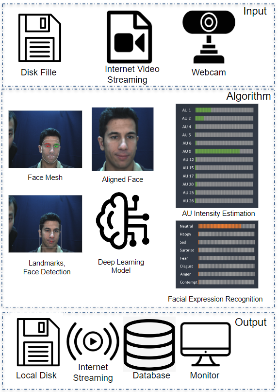
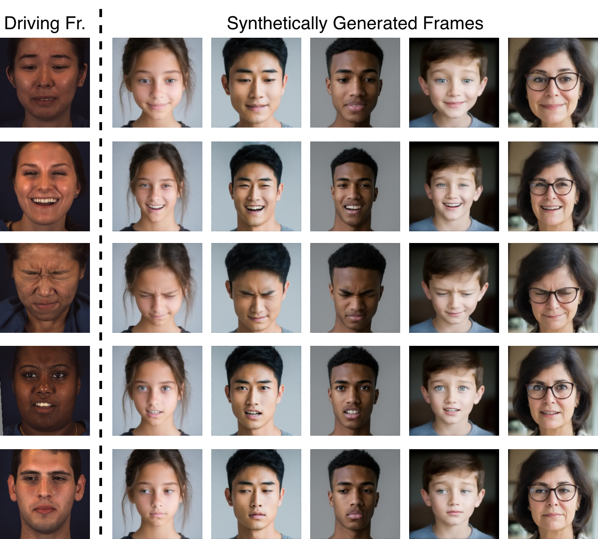
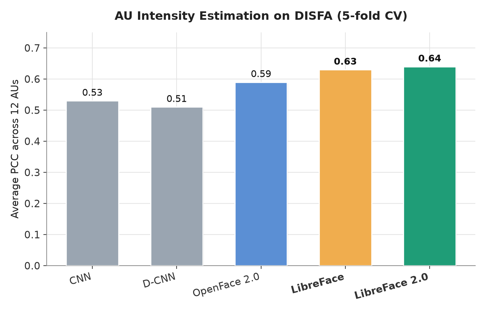
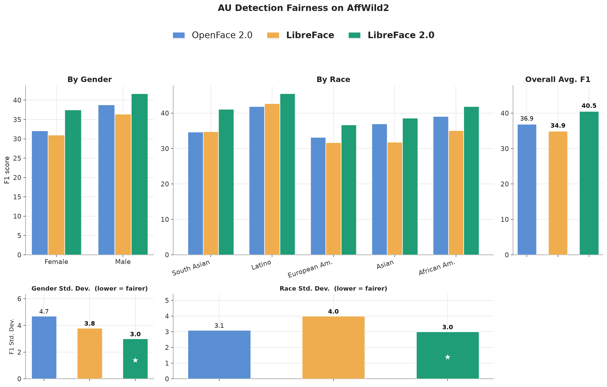
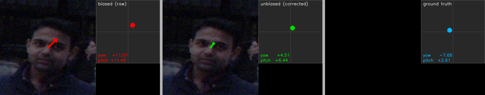

📝 Abstract
Facial expression analysis is central to social AI and human–computer interaction, but the performance and generalizability of existing toolkits are limited by the data they are trained on — particularly for action unit (AU) detection, which requires costly per-frame annotations. LibreFace 2.0 leverages recent advances in face generation and motion retargeting to enrich AU datasets with broader demographic coverage. We use Stable Diffusion 3.5 to synthesize diverse identities spanning age, gender, and race, and retarget real AU motion from annotated datasets onto these generated identities with LivePortrait. Training on this large-scale, demographically diverse dataset yields consistent improvements in benchmark performance and enhances fairness across demographic groups. Beyond AU detection and intensity estimation, LibreFace 2.0 also supports facial expression recognition and gaze estimation through lightweight models that achieve competitive accuracy with substantially fewer parameters, enabling real-time, efficient inference.
🧬 System & Data Generation Pipeline
LibreFace covers the full pipeline from raw input to facial attributes — face detection and alignment, landmark extraction, and a lightweight deep model that jointly predicts AU intensity, AU presence, expression, and gaze.

To close demographic gaps in real AU datasets like DISFA and BP4D, LibreFace 2.0 generates synthetic training data: GPT-4o-authored prompts drive Stable Diffusion 3.5 to create diverse source identities, which are then animated with LivePortrait using real AU-labeled driving videos — transferring ground-truth AU labels onto the new synthetic subjects.

📊 Results


🧩 Toolkit Comparison
| Toolkit | Landmarks | AU Intensity | AU Detection | Expression | Gaze | Train Data |
|---|---|---|---|---|---|---|
| PyFeat | ✓ | ✗ | ✓ | ✓ | ✗ | Real |
| OpenFace 2.0 | ✓ | ✓ | ✓ | ✗ | ✓ | Real |
| OpenFace 3.0 | ✓ | ✗ | ✓ | ✓ | ✓ | Real |
| LibreFace 1.0 | ✓ | ✓ | ✓ | ✓ | ✗ | Real |
| LibreFace 2.0 (ours) | ✓ | ✓ | ✓ | ✓ | ✓ | Synthetic + Real |
⚡ Inference Speed (FPS)
| Model | CPU FPS ↑ | GPU FPS ↑ |
|---|---|---|
| OpenFace 3.0 | 9.6 | 28.6 |
| LibreFace 1.0 | 24.7 | 100.8 |
| LibreFace 2.0 (ours) | 28.6 | 118.9 |
FPS measured on an AMD EPYC 9554 64-core CPU and a single NVIDIA L40S GPU, excluding pre-/post-processing. LibreFace 2.0 is the fastest toolkit on both CPU and GPU.
👀 Gaze Estimation new in 2.0
A lightweight MediaPipe-landmark-based MLP predicts gaze yaw and pitch directly from an aligned face image —
returned alongside AU and expression outputs by default, or available standalone via
estimate_gaze / estimate_gaze_video.

| Model | Yaw MAE ↓ | Pitch MAE ↓ | Avg. MAE ↓ |
|---|---|---|---|
| OpenFace 2.0 | – | – | 26.7° |
| OpenFace 3.0 | – | – | 13.7° |
| LibreFace 2.0 (ours) | 9.86° | 8.94° | 9.40° |
MAE in degrees on Gaze360. LibreFace 2.0 substantially outperforms OpenFace 2.0 and matches OpenFace 3.0 with a far lighter model.
🚀 Get Started
Install from PyPI and run AU, expression, and gaze inference in a few lines of Python.
conda create -n libreface_env python=3.9
conda activate libreface_env
pip install --upgrade librefaceimport libreface
detected_attributes = libreface.get_facial_attributes(
"path/to/your_image_or_video"
)
# returns AU intensities, AU detections,
# facial expression, and gaze_yaw / gaze_pitchlibreface --input_path="path/to/your_image_or_video"See the README for batch sizing, custom devices, the standalone gaze-only API, the .NET / ONNX / OpenSense derivative tools, and full training instructions.
📚 Citation
If you use LibreFace in your research, please cite both papers:
@INPROCEEDINGS{11556988,
author={Guan, Xulang and Chaubey, Ashutosh and Siniukov, Maksim and Hsieh, Annabelle and Li, Zongjian and Soleymani, Mohammad},
booktitle={2026 IEEE 20th International Conference on Automatic Face and Gesture Recognition (FG)},
title={LibreFace 2.0: A Generalizable Facial Expression Analysis Toolkit Leveraging Synthetic Data},
year={2026},
volume={},
number={},
pages={1-10},
keywords={Modeling;Printing;Facial expressions;Aging;Conferences;Signal detection;Action units;Training;Computers;Faces},
doi={10.1109/FG67764.2026.11556988}}@InProceedings{Chang_2024_WACV,
author = {Chang, Di and Yin, Yufeng and Li, Zongjian and Tran, Minh and Soleymani, Mohammad},
title = {LibreFace: An Open-Source Toolkit for Deep Facial Expression Analysis},
booktitle = {Proceedings of the IEEE/CVF Winter Conference on Applications of Computer Vision (WACV)},
month = {January},
year = {2024},
pages = {8205-8215}
}